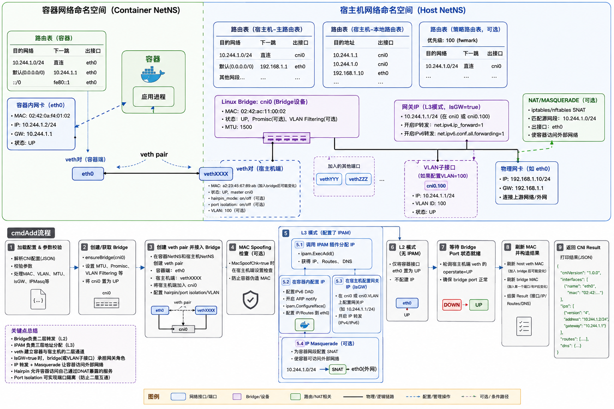
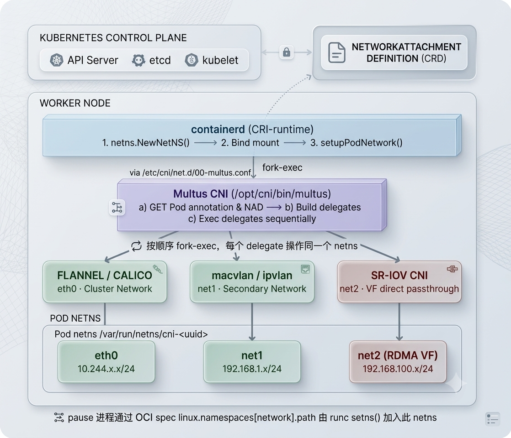
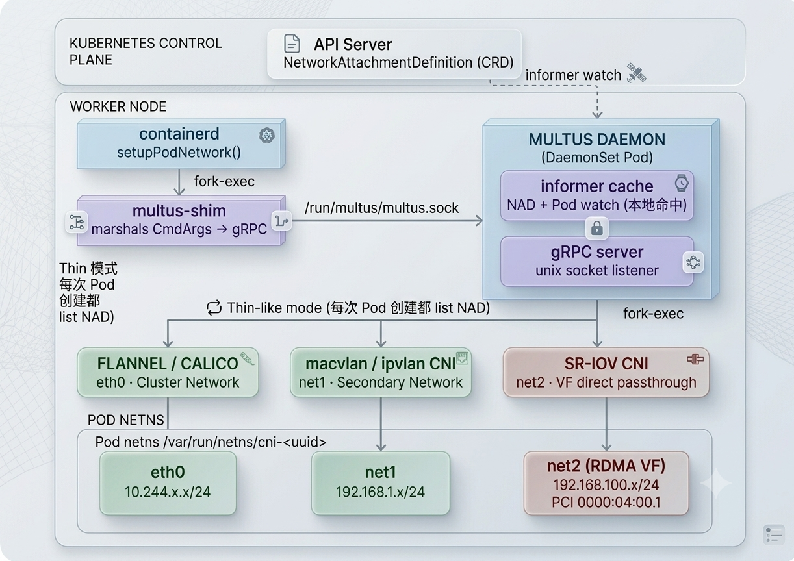

1. 为什么需要多网卡
传统微服务场景下，东西向网络流量通常不需要特别大的带宽，采用常规网卡即可满足需求。但在 AI 场景或其它高性能场景下，传统网卡就显得不够用了。因此，一种常见的做法是将流量分离：传统业务流量和管理流量依然走传统网卡，而其它流量走特定的网卡。然而，Kubernetes 默认的网络模型仅会给 Pod 分配一个网卡。要提供多网卡，必须有一种机制将不同的网卡设备也挂载到 Pod 的网络命名空间（netns）中。实现这种效果需要使用多 CNI，目前工业界普遍采用的成熟开源方案是 Multus。
2. CNI 基础原理
要想了解 Multus CNI 是如何在现有 CNI 机制上进行扩展的，需要先简单了解相关的背景知识和 CNI 的基础内容。
2.1 netns 网络命名空间
Linux 会把网络虚拟化成独立的 netns。每个 netns 拥有独立的：
- 网络接口列表
- 路由表
- iptables 规则链
- socket 表
- /proc/sys/net/ 参数
网络接口/设备可以在 netns 之间移动（通过 ip link set eth0 netns <pid>），但移动后原 netns 就看不到它了。veth pair 是例外——veth 是成对创建的，一端在 host netns，一端在 Pod netns，两端之间形成一条虚拟以太网链路，这样 Pod 即可正常发送和接收数据包。
需要特别说明的是：netns 的生命周期绑定到"至少有一个引用"。意思是说，只要某个进程打开了 /proc/<pid>/ns/net 这个文件，就持有了一个引用，即使进程退出，netns 也不会消亡（直到文件被关闭）。kubelet 把这个文件路径传给 CNI 二进制文件，就是为了让 CNI 能用 setns(fd, CLONE_NEWNET) 系统调用进入那个 netns 配置接口。
2.2 哪个容器持有 netns
根据 Kubernetes 网络模式的规定，一个 Pod 内的所有容器共享同一个 netns，该 netns 由 pause 容器 持有。实现流程如下：
- kubelet 启动 Pod 时，通过 runtimeService（基于 gRPC）调用 CRI 的
RunPodSandbox方法。 - CRI 收到请求后，在
RunPodSandbox中继续调用netns.NewNetNS创建一个空的 netns，然后将这个文件 bind mount 到/var/run/netns/cni-xxxxxx（Docker 环境为/run/docker/netns/xxxxxx）。此时尚未有任何进程属于这个 netns。（关于创建 netns 的详细步骤请移步补充内容。） - CRI 进一步调用
setupPodNetwork()，在这里调用 CNI 二进制文件，在这个空 netns 里配置网络。CNI 执行完成后退出，netns 中已有了网络接口（eth0）、IP 和路由。 - 最后，CRI 调用
StartSandbox()，真正创建并启动 pause 容器。pause 通过 OCI spec 加入已存在的 netns。后续业务容器启动时也通过同样的方式加入这个 netns。
2.3 如何给 Pod 分配接口/IP 等内容
CRI runtime 在启动 Pod sandbox 时，会通过 CNI library 调用本地 CNI 插件。它通常会扫描 /etc/cni/net.d/ 下的 CNI 配置文件（例如 Calico 常见的 10-calico.conflist）。文件名前面的数字决定加载顺序，数字越小越靠前。
配置文件中的 type 字段会对应到 /opt/cni/bin/ 下的 CNI 插件二进制文件。CNI library 会在该目录中查找可执行文件，然后通过执行插件 binary，并借助环境变量和 stdin 封装一个 cmdAdd 的入参，调用 cmdAdd 方法来完成 Pod 网络接口、IP、路由等配置。
以 bridge CNI 搭配 host-local IPAM 为例，配置文件示例如下：
{
"cniVersion": "1.0.0",
"name": "mynet",
"type": "bridge",
"bridge": "mynet0",
"isDefaultGateway": true,
"forceAddress": false,
"ipMasq": true,
"hairpinMode": true,
"ipam": {
"type": "host-local",
"subnet": "10.10.0.0/16"
}
}
2.3.1 CNI 插件收到什么？
cmdAdd 的入参 *skel.CmdArgs 结构如下：
type CmdArgs struct {
ContainerID string // 容器 ID
Netns string // 要加入的那个 netns
IfName string // 给容器添加的设备名字，例如 eth0
Args string
Path string
NetnsOverride string
StdinData []byte // CNI 配置（JSON）
}
插件要做的事只有一件：在 Netns 这个 netns 里，用 IfName 这个名字，创建一张有 IP 的网络接口。
2.3.2 创建设备并分配 IP
该插件在上述流程中主要完成以下几个步骤：
- 解析配置并在宿主机上建立 bridge 设备（或确保其存在）。
- 打开 netns，创建 veth 对。
- 如果有 IPAM，调用 IPAM 子插件分配 IP。
- 进入容器 netns，配置 IP 和路由。
首先，bridge 插件在 host netns 里用 netlink.LinkAdd 确保 bridge 存在（已存在则复用），并把 bridge 状态设为 UP。
然后，CNI 会调用 setupVeth 方法，在容器网络命名空间和宿主机网络命名空间之间创建 veth 对：
- 容器端：
args.IfName（如eth0） - 宿主机端：自动生成临时名字（如
vethxxx）
接着将宿主机端的 veth 接入 bridge，并配置：
- Hairpin 模式（允许容器访问自己通过 DNAT 暴露的服务）
- 端口隔离
- VLAN 标签（如果配置了 VLAN）
如果 CNI 配置中包含 IPAM，则进入 L3 模式，通过 IPAM 分配 IP 并配置网络，具体步骤为：
- 向 IPAM 请求 IP 地址，拿到 IP 和网关地址。
- 补全网关地址并配置默认路由。
- 进入容器 namespace 配置网卡，开启 ARP notify，然后将 IP、网关等写到容器内的网卡设备上。这一步类似于在容器内执行：
ip addr add 10.244.1.5/24 dev eth0 ip route add default via 10.244.1.1 - 在宿主机上给 bridge 配置网关 IP，并开启 IP 转发。
- 配置 IP Masquerade（SNAT）。

2.4 Pod 单网卡的限制从哪儿来？
前面提到，CRI runtime 通过 go-cni 库调用 CNI 插件。go-cni 在初始化时会扫描 /etc/cni/net.d/ 目录下的配置文件，并决定要加载几个网络。单网卡的限制就发生在这个加载逻辑中。
来看 containerd 的 go-cni 库中的关键函数 loadFromConfDir（简化版）：
func loadFromConfDir(c *libcni, maxConfigs int) error {
// 1. 读取目录下所有 .conf / .conflist 文件
files, _ := cnilibrary.ConfFiles(c.pluginConfDir, []string{".conf", ".conflist", ".json"})
sort.Strings(files) // 按字典序排序
var networks []*Network
for _, confFile := range files {
// 解析配置文件为 NetworkConfigList
confList := parse(confFile)
networks = append(networks, &Network{config: confList})
if len(networks) == maxConfigs {
break // 达到上限就停止
}
}
c.networks = networks
return nil
}
所有文件都会被遍历解析，但受 maxConfigs 控制，达到上限即 break。containerd 的默认配置是 cni_max_conf_num = 1，对应 maxConfigs = 1，因此实际上只加载字典序第一个文件对应的网络。
由此可见，单网卡的限制根源在于 maxConfigs = 1，这意味着 c.networks 里默认只有一条记录，Setup() 只会调用这一个网络插件，自然只能产生一张接口。
为了让 Pod 在自己的网络命名空间中看到多个网络接口，Multus 的方案是：把自己变成那个"字典序第一"的 CNI 配置，由 Multus 在内部调用多个 delegate CNI，从而绕过 go-cni 的最大配置数限制。
3. Multus 详解
Multus 的定位是一个 meta-plugin。它本身不创建任何网络设备，只负责按顺序调用多个 delegate CNI，并把结果都注入同一个 netns。对 CRI runtime 而言，它只调用了一个 CNI；对 Pod 而言，netns 里出现了来自不同 delegate 的多张接口。
3.1 部署形态
-
Thin plugin（传统方式）
如下图所示，CRI runtime 每次 fork-exec
/opt/cni/bin/multus，Multus 进程内部再 fork-exec 各个 delegate binary，执行完成后全部退出。这些进程的生命周期很短，每次 Pod 创建都要冷启动一个 in-cluster Kubernetes client，在 Pod 密集创建场景下会给 API Server 带来大量 list 请求。
-
Thick plugin / DaemonSet（生产常用）
这种模式下，每个 Kubernetes 节点上常驻一个
multus-daemon进程（DaemonSet），它持有完整的 Kubernetes informer cache，监听/run/multus/multus.sock。CRI runtime fork-execmultus-shim，shim 将CmdArgs序列化后发给 daemon，daemon 处理完成返回结果。informer cache 消除了重复 list 的问题，同时 daemon 支持热加载 NAD 变更，无需重启。
3.2 数据模型
Multus 的数据模型由 CRD、Pod 注解以及委托配置三部分组成：
-
NetworkAttachmentDefinition（NAD） CRD：用来描述一个附加网络的配置。
-
Pod 注解（根据用处分为两类）：
- 选择附加网络：
k8s.v1.cni.cncf.io/networks注解可以让 Pod 声明需要使用的附加网络（可指定多个，以列表形式表示）。 - 状态回写：添加附加网络成功后，Multus 会将实际结果写回到 Pod 的
k8s.v1.cni.cncf.io/networks-status注解，内容是一个 JSON 数组，记录每个接口的详细信息。
- 选择附加网络：
-
委托配置：Multus 自身的主配置中，可以通过
delegates字段指定默认网络插件（通常创建 eth0）。例如，将 flannel 作为主网络：{ "cniVersion": "0.3.1", "name": "multus-cni", "type": "multus", "delegates": [{ "cniVersion": "0.3.1", "type": "flannel", ... }], "kubeconfig": "/etc/cni/net.d/multus.d/multus.kubeconfig" }
3.3 Multus 的调用流程：CmdAdd 全链路
前文已经讲述过 CNI 最终调用 cmdAdd 方法来配置 Pod 网络。当 Multus 被调用起来后也是一样的。根据 Multus 源码，可以将整个 CmdAdd 分为 8 个部分。
3.3.1 加载 Multus 自身的配置与环境参数
Multus 从 stdin 拿到自己的主配置，其中 delegates 字段里藏着默认网络插件（例如 flannel 或 calico）的配置：
n, err := types.LoadNetConf(args.StdinData)
if err != nil {
return nil, cmdErr(nil, "error loading netconf: %v", err)
}
随后从环境变量提取 Kubernetes 参数（Pod 名字、命名空间等），这些会被塞进 k8sArgs 里，贯穿整个流程：
k8sArgs, err := k8s.GetK8sArgs(args)
此时 n.Delegates 已经包含了默认网络配置（如果配置了的话），但附加网络还没着落。
3.3.2 获取 Pod 对象
Multus 需要 Pod 对象来读取注解，于是调用 GetPod：它先用 informer 缓存，若失败就退回到 API 直接查询，并且在 Pod 未找到时对 ADD 操作采取容忍策略（返回空结果，避免卡住 kubelet）：
pod, err := GetPod(kubeClient, k8sArgs, false)
if err != nil {
if stderrors.Is(err, errPodNotFound) {
emptyResult := emptyCNIResult(args, n.CNIVersion)
return emptyResult, nil
}
return nil, err
}
若 Pod 已被删除，Multus 直接返回一个带有 0.0.0.0 的空结果，让 kubelet 继续后续流程。
3.3.3 加载委托网络列表
k8s.TryLoadPodDelegates 是附加网络的"真相时刻"。它会解析 Pod 的 k8s.v1.cni.cncf.io/networks 注解，把每一项转换成内部的数据结构 DelegateNetConf，追加到 n.Delegates 里。如果注解引用了 CRD，就去缓存里把对应配置取出来并填充进去：
_, kc, err := k8s.TryLoadPodDelegates(pod, n, kubeClient, resourceMap)
if err != nil {
return nil, cmdErr(k8sArgs, "error loading k8s delegates k8s args: %v", err)
}
这里的 kc 代表 Kubernetes 客户端可用（有 kubeconfig），后续写网络状态时会用到。此时 n.Delegates 已经是一个完整有序的列表：默认网络 + 附加网络1 + 附加网络2 + …。这个顺序决定了接口命名。
3.3.4 缓存委托配置
为了防止 Pod 被快速删除时 CmdDel 拿不到委托信息，Multus 会把整个 n.Delegates 序列化并写入磁盘：
if err := saveDelegates(args.ContainerID, n.CNIDir, n.Delegates); err != nil {
return nil, cmdErr(k8sArgs, "error saving the delegates: %v", err)
}
这样即便 Pod 被删、注解丢失，DEL 操作仍然可以从缓存中恢复委托配置，安全地清理网络接口。
3.3.5 循环委托，逐个添加网络
这是核心逻辑。每个委托都会获得一个网络接口名，然后调用 DelegateAdd 执行真正的 CNI ADD：
for idx, delegate := range n.Delegates {
ifName := getIfname(delegate, args.IfName, idx)
rt, _ := types.CreateCNIRuntimeConf(args, k8sArgs, ifName, n.RuntimeConfig, delegate)
tmpResult, err = DelegateAdd(exec, kubeClient, pod, delegate, rt, n)
// ...
}
其中，getIfname 的逻辑保证了接口名的确定性和可预测性：
func getIfname(delegate *types.DelegateNetConf, argif string, idx int) string {
if delegate.IfnameRequest != "" {
return delegate.IfnameRequest
}
if delegate.MasterPlugin {
return argif // 主网络使用 eth0
}
return fmt.Sprintf("net%d", idx) // 附加网络 net1, net2, ...
}
3.3.6 委托插件执行与路由策略
DelegateAdd 最终调用 confAdd 或 conflistAdd，它们会通过标准 CNI 路径找到插件二进制文件并执行，然后把返回的结果（IP、路由、DNS）收集起来。
除此之外，代码中还有一个非常实用的功能：按需删除或替换默认网关。
如果某个附加网络标注了 default-route 选择器（通过注解配置），Multus 会在 ADD 之后手动删除该接口的默认路由，或者用它指定的网关替换：
if deleteV4gateway || deleteV6gateway {
err = netutils.DeleteDefaultGW(args.Netns, ifName)
// ...
}
if adddefaultgateway {
err = netutils.SetDefaultGW(args.Netns, ifName, *delegate.GatewayRequest)
// ...
}
这使得多网卡场景下的路由控制非常灵活。
3.3.7 汇总结果，回写 Pod 状态
所有委托成功后，Multus 会从每个结果中提取 IP 和接口信息，拼装成 NetworkStatus 切片，然后通过 API 写入 Pod 的 k8s.v1.cni.cncf.io/networks-status 注解：
if kubeClient != nil && kc != nil {
err = k8s.SetNetworkStatus(kubeClient, k8sArgs, netStatus, n)
// ...
}
这样其他组件（例如监控、策略引擎）就能直接读到 Pod 的多网卡分配情况。最终，Multus 把主网络的结果（eth0 的 IP 和路由）作为整个 CmdAdd 的返回值交给 kubelet。
3.3.8 失败回滚
如果在添加第 N 个委托时失败，Multus 会立即停止后续委托，并调用 delPlugins 回滚已添加的前 N-1 个接口：
tmpResult, err = DelegateAdd(...)
if err != nil {
_ = delPlugins(exec, nil, args, k8sArgs, n.Delegates, idx, n.RuntimeConfig, n)
return nil, cmdPluginErr(k8sArgs, netName, "error adding container to network %q: %v", netName, err)
}
delPlugins 会以倒序方式对每个已添加的委托调用 DelegateDel，保证网络命名空间里不留下任何残留。这种"全成功或全失败"的原子性，是生产环境中 Pod 创建可靠性的重要保障。
4. 总结
总结一下，Kubernetes 默认只给 Pod 一张网卡，这在 AI 这类高性能场景下不够用。
Multus 的思路很直接：它把自己伪装成默认 CNI，然后在内部偷偷调起多个网络插件，让 Pod 能同时挂上多张网卡。
这篇文章讲了一些 CNI 的基础内容，分析了单网卡的根源，然后聊了 Multus 的工作方式和几种部署形态，也算是给网络这类文章开个头。
补充内容
1. netns 创建过程
containerd 在创建 netns 时会执行以下操作：
- 创建用于挂载点的文件（非目录），随机命名如
cni-xxxx。 - 通过 bind mount 实现持久化：
mount(/proc/pid/ns/net, 文件, MS_BIND)，增加引用计数，使得进程退出后命名空间依然存活。 - 创建新 netns：
unshare(CLONE_NEWNET)在线程级完成。 - 必须调用
LockOSThread：因为 netns 是线程属性，锁定专用线程可避免污染其他调用方。 - 使用完毕后切回原 netns。